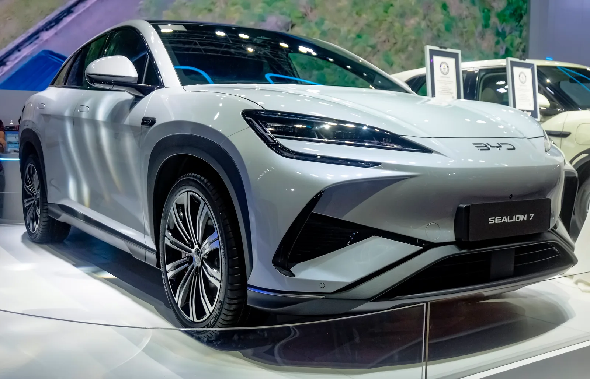

▲ BYD 씰라이언7. 4,490만 원으로 국내에 상륙했으며, 이후 상위 플러스 트림이 추가됐다 ⓒ BYD코리아
'바다의 미학(Ocean Aesthetics)'이라는 디자인 철학을 내세운 BYD 씰라이언7이 국내에 상륙했다. 2025년 9월 첫 출시 당시에는 단일 트림, 판매 가격 4,490만 원(친환경차 세제혜택 적용 후, 보조금 미반영)으로 운영됐다. 이후 2026년 4월 프리미엄 사양을 더한 '플러스' 트림이 4,690만 원에 추가되며 현재는 2개 트림 체제다. 여러 매체와 커뮤니티에 흩어진 시승 소감을 모아보면, 공통적으로 등장하는 표현이 있다. "놀랍지 않은 자질로 놀라운 경쟁력을 보여준다"는 것이다.
1. 쿠페형 실루엣과 넓은 레그룸

▲ BYD 씰라이언7 후면. 낮고 매끄럽게 떨어지는 루프라인이 쿠페형 SUV의 특징을 보여준다 ⓒ BYD코리아
씰라이언7의 쿠페형 SUV 실루엣은 낮고 매끄럽게 떨어지는 루프라인으로 시각적 역동성을 강조한다. 공기저항계수 0.28을 실현하며 주행 효율까지 챙겼다. 여기에 휠베이스가 2,930mm에 달해, 동급 경쟁 모델 대비 광활한 레그룸을 확보한 점이 시승기마다 공통적으로 언급되는 강점이다.
2. 초반 가속감 — "화끈하기보다는 여유 있는 느낌"

▲ BYD 씰라이언7 실내. 짧은 시승만으로도 만족스러운 주행 감각이라는 평가가 많았다 ⓒ BYD코리아

▲ BYD 씰라이언7 실내. 대시보드와 센터 디스플레이 마감이 가격대 대비 준수하다는 평가다 ⓒ BYD코리아
제이슨류닷넷의 시승기는 씰라이언7의 초반 가속감을 "공차중량이 2.2톤이 넘는 차체를 밀어붙이는 가속감은 화끈하기보다는 적당히 여유 있는 느낌"이라고 표현했다. 최고출력 230kW(약 313마력), 최대토크 380Nm의 파워트레인으로 출발·가속 시 변속 충격 없이 매끄러운 속도 변화를 보여준다는 평가다. 전기차 특유의 화끈한 가속력을 기대하면 다소 밋밋할 수 있지만, 중형 SUV급 차체를 부드럽게 다루는 세팅이라는 뜻이다. 이는 짧은 시승 기준의 소감이라, 장거리·다양한 노면에서의 승차감이나 핸들링 한계 영역까지 검증된 평가는 아니라는 점은 참고할 필요가 있다.
3. 실내외 마감 — "대륙의 기상은 벗어났다"

▲ BYD 씰라이언7. 시승기들은 과거 중국차에 대한 선입견에서 벗어난 마감 품질을 공통적으로 언급했다 ⓒ BYD코리아

▲ 모터쇼에 전시된 BYD 씰라이언7. 조립·마무리와 내장재 질감에서 허술한 부분을 찾기 어렵다는 평가가 나온다 ⓒ BYD
여러 시승기에서 반복적으로 등장하는 문구는 "과거 중국차 이미지에서 벗어난 마감"이라는 평가다. 제이슨류닷넷 역시 "조립과 마무리, 내장재의 질감 등 전반적 꾸밈새도 허술한 부분을 좀처럼 찾기 어렵다"고 평했다. 내외장 디자인 모두 예전 중국 브랜드에 따라붙던 선입견을 상당 부분 걷어냈다는 것이 공통된 반응이다. 물론 최상위 프리미엄 브랜드 수준까지는 아니라는 단서가 따라붙지만, 4,490만 원이라는 가격대를 감안하면 상품성 대비 가격 경쟁력이 높다는 평가로 이어진다. 2026년 4월 추가된 플러스 트림(4,690만 원)은 나파가죽 시트, 운전석 메모리 시트, 4방향 전동 허리지지대, 전동 레그 서포트 등을 더해 이런 마감 완성도를 한층 끌어올렸다.
4. 종합 — 가격이 만드는 설득력
여러 리뷰를 관통하는 결론은 하나로 모인다. 씰라이언7이 최상급 수입 전기 SUV와 완전히 동등한 완성도를 갖췄다고 보기는 어렵지만, 그 격차를 가격으로 충분히 상쇄할 수 있는 단계에 이르렀다는 것이다. 이는 BYD가 국내에서 브랜드 존재감을 높이는 데 실질적으로 기여한 모델이라는 평가로 이어진다.
5. 정리
체크포인트
- 씰라이언7은 기본형 4,490만 원으로 출시됐고, 2026년 4월 플러스 트림(4,690만 원)이 추가돼 현재 2개 트림이다.
- 휠베이스 2,930mm로 동급 대비 넓은 레그룸을 확보했다.
- 초반 가속감은 화끈하기보다 여유 있고 매끄러운 세팅이며, 실내외 마감은 예상을 뛰어넘는다는 평가가 많다.
- 최상급 프리미엄 브랜드와는 격차가 있지만, 가격 대비 경쟁력이 핵심 강점으로 꼽힌다.